MABがゴルフスクールでありながら
スコアアップの為に呼吸に注目する理由とは？
スイングレッスンだけしていても限界
があるからに他なりません
今の身体の状態のままスイング練習をしても、
今の身体の可動域や筋力・柔軟性以上の上達は困難だからです。
あなたのゴルフポテンシャルを最大限に引き出すには、今の身体の状態を改善し、柔軟性と筋力を改善・向上させる必要があります。その為のカギを握るのが、私達人間が意識せずに行っている『呼吸』なのです。
MAB『ADVANCED PROGRAM』なら
Dr.Karel Lewit（カレル・レウィット）の有名な言葉、
『呼吸が正常にならない限り、そのほかの動作パターンは変わることはない』
と言われる様に、呼吸には正しい呼吸法が存在します。
正しい呼吸と正しい姿勢という身体の土台を身に付けることで、スコアアップへの道が切り開けるのです。
あなたのゴルフポテンシャルを最大限に引き出す！
ADVANCED PROGRAM独自のメソッド
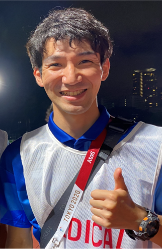
東京オリンピック選手帯同トレーナー監修
鈴木誉也（すずきたかや）
このプログラムの「姿勢×呼吸」は他のゴルフスクールでは体験出来ないプログラムです。ゴルフのスイングやアドレス姿勢、飛距離などは技術のみでは改善できるものではありません。日常生活から身体を変えていかなければ、スイングも飛距離も変わっていきません。現代ではスマホの発展やデスクワークの増加などにより、子供から大人まで姿勢が悪くなり、柔軟性なども低下しています。その中の原因として、呼吸が正しく行えていないことがあるのです。呼吸は私達が唯一、意識的にも無意識的にも行える素晴らしい機能です。しかし、正しい呼吸を行えていないことで姿勢不良にもつながり、肩こりや腰痛など様々な症状へと発展し、また、ゴルフスイングにも悪影響を及ぼしていきます。まずは、日常的な姿勢や呼吸を変えることでよりゴルフの上達をさせていきます。
- 【資格】
- 日本スポーツ協会公認アスレティックトレーナー（JSPO-AT）
- 鍼灸あん摩マッサージ指圧師
- 【学歴】
- 帝京大学医療学部スポーツ医療学科卒業
- 花田学園 日本鍼灸理療専門学校本科 卒業
- 帝京大学駅伝競走部学生トレーナー
- 某大学チアリーディング部ボランティアトレーナー
- 青山学院大学フィットネスセンター
- アシスタントスタッフ
- 林整形外科アシスタントトレーナー
- 【トレーナー歴】
MABアドバンスドプログラムは、呼吸と姿勢に着目した独自のメソッドを開発。公認資格を持ったプロゴルファーと東京オリンピックにも帯同したトレーナ「身体のスペシャリスト」がコンビを組んで、お客様のスイングのクセや悩みの原因を身体から発見し、人体学的見地に基づき解決していきます。あくまでも動作をするのはご自身の身体であり、身体の改善無くしてお客様が持つ本当のゴルフの実力は引き出せないと言うのがこのメソッドの理念です。
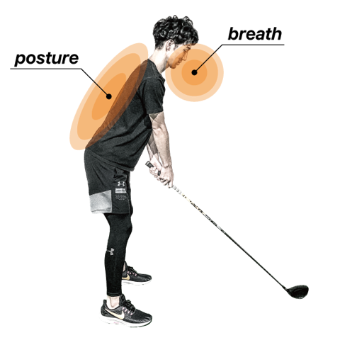
Breathe（呼吸）
無意識的にも意識的にもできる人間唯一の生理機能。正しく呼吸ができないと、パフォーマンスの低下、肉体的疲労、精神的疲労があり、場合によっては怪我の要因になります。呼吸を意識すればするほど、より健康的で高いフィジカルとメンタルが手に入ります。日常生活の姿勢がゴルフに大きな影響を与え、を変える為の基礎根底です。主に肩甲骨・背骨・股関節を改善し正しい姿勢に戻します。
Posture（姿勢）
日常生活の姿勢がゴルフに大きな影響を与えます。すべてを変えるための基礎根底となる、主に肩甲骨・背骨・股関節を改善し正しい姿勢に戻します。
のトレーニングコンテンツで構成される独自のメソッド
身体トレーニング
- 呼吸と姿勢の理解
- 正しい呼吸法の習得
- 呼吸の定着
- 体幹と柔軟
- ウェイトトレーニング
- 姿勢維持トレーニング
- 正しい身体の使い方習得
- 身体感覚を身に付ける
- ゴルフスイング用の身体の
使い方をマスターする
身体トレーニングのポイント
『正しい呼吸に変える』
呼吸が変われば自然と姿勢も変わります。呼吸は人間が唯一、意識的にも無意識的にも行っている動作です。呼吸は誰からも教えられずに始まるものでもあります。赤ちゃんの時が一番正しい呼吸をしているのです。ですが、現代ではデスクワーク、スマホなどにより正しい呼吸を忘れてしまい、悪い呼吸になってしまっています。呼吸には胸郭（肋骨や胸椎など）が関わってきます。そこがうまく動かないことによって、姿勢が悪くなり、呼吸も浅くなり、肩こり、腰痛にもなりやすくなります。
『姿勢を変えて、維持する』
呼吸が変われば、姿勢も変わっていきますが、それを定着させる為には呼吸以外のトレーニングをしていかなければなりません。 ステップ２では、単純な自重トレーニングだけでは変わらない部分を変える為、重りを用いたウエイトトレーニングや体幹トレーニングをしていきます。ウエイトトレーニングは柔軟性も上がる、とても効果的で安全なトレーニング手法です。
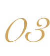
『ゴルフに直結する動き作り』
姿勢が変わってきたら、鍛えた身体をコントロールする必要があります。ステップ3では、瞬発力を鍛える為にジャンプトレーニングやバトルロープ等のロープトレーニング、太極拳の動きを取り入れたオリジナルメソッドによるゴルフの動作につながるトレーニングを行い、ゴルフに直結した身体の使い方を身に付けます。
ゴルフトレーニング
- シンクロ呼吸の習得
- グリップの握り方
- セットアップ
- フェイスコントロール
- 得意な球筋の見極め
- 飛ばす為の身体の使い方
- 遠心力コントロール
- モーション
- コースマネジメント術
ゴルフトレーニングのポイント
『グリップの握り方』
クラブの重心を意識し、手と手首のアーチに合わせてグリップする事。グリップの形をオーバーラッピング・インターロッキング・ベースボールを基に手と手首のアーチを理解し、クラブ機能を引き出す為のグリップが作れるようにします。
『アドレス(姿勢)』
ターゲットの位置へボールを運ぶ為に下肢と上肢の構造を理解し、クラブ機能を考慮する事。 アドレスの姿勢は、脊柱に対してボールを飛ばす方向に基準(平行、直角、垂直)を作り、反対側から押す体制を作る事でターゲットにボールを運ぶ意識が持てるようにします。(例) 右打ちの場合 左半身がインパクトの姿勢、右半身がボールに力を伝える為の姿勢。左股関節から前傾し下肢は、垂直、上肢は平行と直角を整える。右肩が左手に覆い被さる事でハンドファストのインパクトを意識する。
『モーション』
ターゲット位置に対して、クラブ機能を考慮しボールのライに合わせたインパクトをイメージし、アドレス時の姿勢に従った動作をする事。モーションではクラブ機能を考慮し、インパクトをイメージしたアドレスの姿勢に従いクラブの物理的な動きを使い切る為に関節の可動性を考える。股関節を使う為に胸椎の回旋30°、腰椎の回旋5°、腰椎の回旋では、屈曲域で股関節に逆行(側屈)する事が大切です。また、上肢帯の動きとして胸鎖関節を支点とする円錐運動によりクラブ機能を引き出し切ることを目的とする。
3ヶ月間での劇的な状態変化
を体感して下さい
- 体の変化
- ゴルフスイング
における身体の
使い方の変化 - ゴルフスイング
の変化 - 飛距離や方向性
の変化 - 最適なスイング
と理想のスコアへ
アドバンスドプログラム
3カ月プログラム構成
※カウンセリングを基にお客様の身体の状態、ゴルフレベルに合わせトレーニングメニューをパーソナライズ致します。
※ラウンドレッスン時のコースフィーはお客様の実費負担となります。
MABのサポート体制 プロと同様のサポート環境であなたのスコアUPを全力サポート！
経験豊富なPGA(日本プロゴルフ協会)、LPGA(日本女子プロゴルフ協会)公認資格を持ったプロ、アスレティックトレーナーと鍼灸あん摩マッサージ指圧師の資格を持ち東京オリンピックにも帯同した専属トレーナーがチームを結成。プロゴルフファー・トレーナーのみならず、MABスタッフが連携して多角的にサポート。プログラムを効果的に推進し、挫折させません。
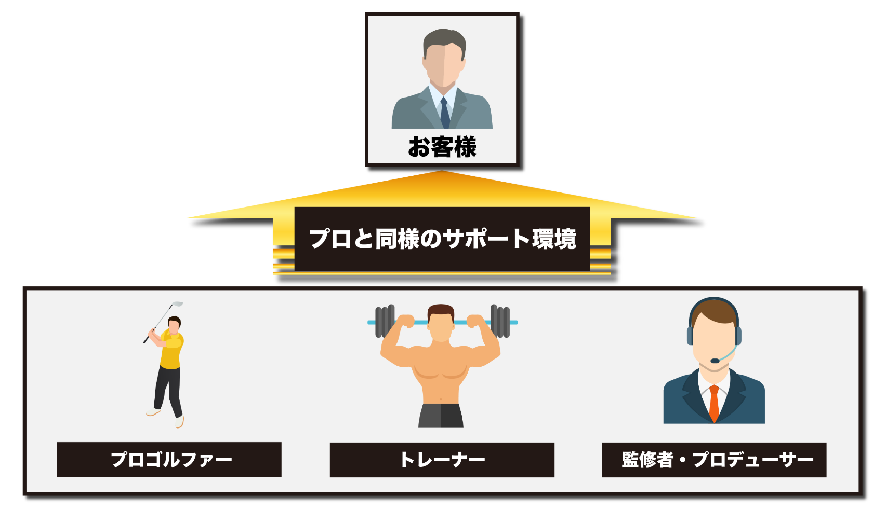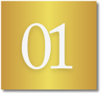プロゴルファー
経験豊富なPGA・LPGA公認資格や世界屈指のゴルフトレーニング資格TPI、ゴルフフィットネストレーナー資格JGFOなどを持ったプロのレッスンを取り入れています。ゴルファーが未然に怪我を防げるようにお客様一人一人の身体に合ったレッスンを行い、お客様の身体を大切にしたレッスン「フィットネス×ゴルフ」を提供しております。
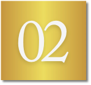トレーナー
お客様のカラダのコンディションはもちろん、栄養・メンタル・健康を、より専門的かつ総合的にアドバイスできる体制をつくることで、より安心・確実なボディメイクを支えます。
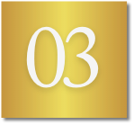監修者・プロデューサー
「なかなか身体が変わらない…」「スイングに変化がない…」といったエラーをプロゴルファーとトレーナーと常に連携。不安や悩みに対して、的確なアドバイス体制を整えています。
劇的に変える！
トレーニング環境
MABアドバンスドトレーニングでは、身体トレーニングとゴルフトレーニングで劇的な結果を出す為に、トレーニング環境も身体・ゴルフの専門家監修の下、考え抜かれています。
身体のトレーニングとケアに特化した専用施設
上質な空間で、トレーニングやマッサージを受けていただけるよう、開放感がありながらも完全個室のトレーニングルームなど内装にもこ だわっております。トレーニング機材が充実した完全個室のトレーニングルームが1部屋、パーソナルストレッチやコンディショニングが受けられるボディーケアルームを1部屋設けております。清潔でおしゃれなシャワールームも完備しており、快適にご利用いただける空間となっています。トレーニングタイムを快適に過ごして頂くために、充実したトレーニング施設と清潔で高級感のある空間で皆様をお待ちしております。
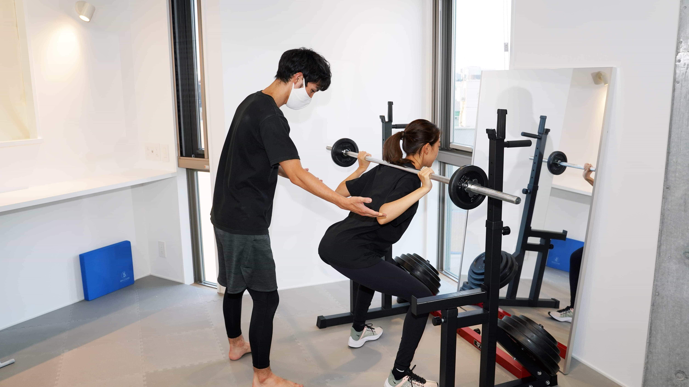 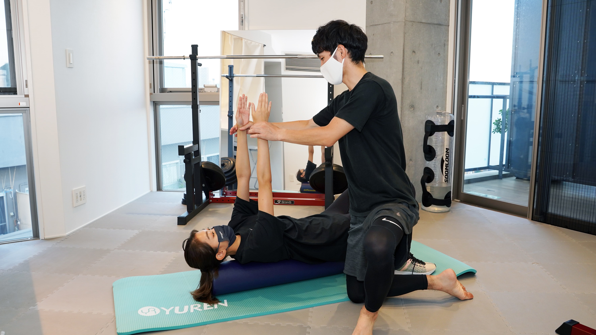 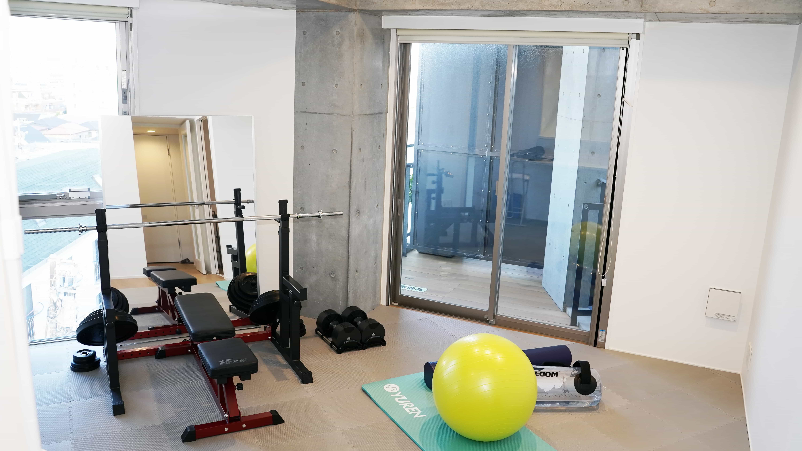 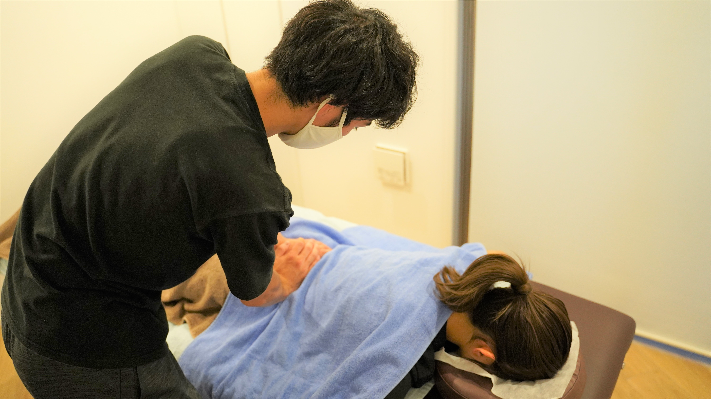ゴルフトレーニング施設＆設備
実績NO.1のスイングチェッカー【スイングナビ】を設置。 スイングナビは難しい操作は無く、ただゴルフボールを打つだけで自動的に正面と後ろからのゴルフスイングを撮影します。プロの映像と比較しながら自分のゴルフスイングをみることができるので分かりやすく、自分のペースでセルフゴルフレッスンが可能となります。また、「1対1で指導する時間」と「一人で練習する時間」のバランスを考え、当スクールでは最大4ブース準備しており、お客様一人ひとりのニーズに応える環境づくりに努めています。
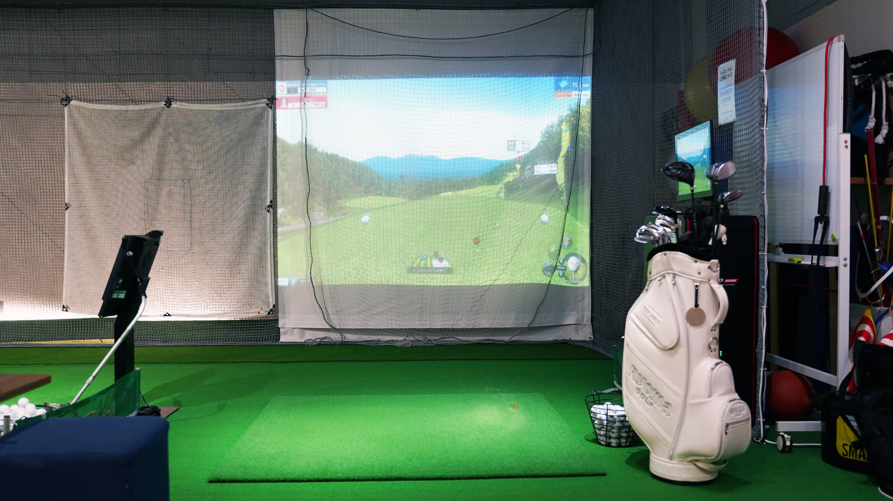 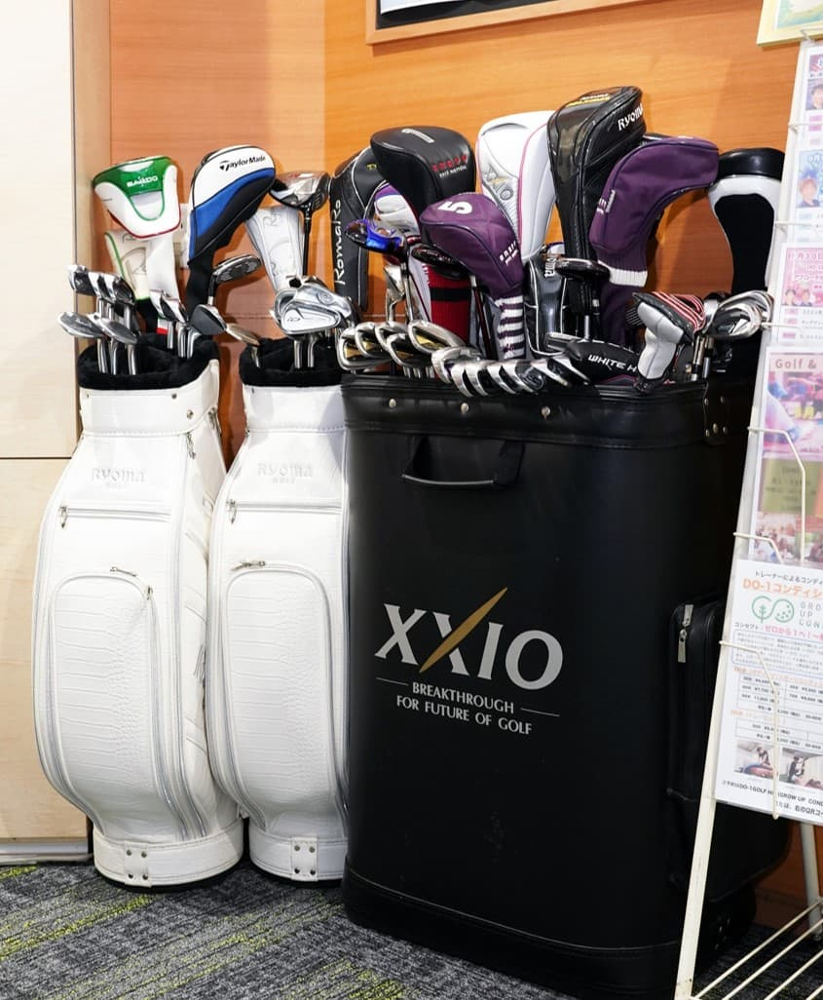【身体とゴルフ】の
MABゴルフポテンシャル診断
身体状態チェックとスイング状態をチェックして
あなたのゴルフポテンシャルを診断致します。
東京オリンピック選手帯同トレーナー
&
ゴルフレッスンプロからの直接アドバイス付き！
¥3,300（90分）
Contact
お電話
03-6452-2290アクセス
DO-1 GOLF BY MAB
東急東横線「学芸大学」から徒歩2分
〒152-0004
東京都目黒区鷹番3-4-13
笹崎ボクシングビルB1
アクセス東急東横線「学芸大学」から徒歩2分